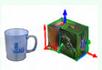

Device 1 · SLAM computer
ORB-SLAM3 or HDL-Graph-SLAM
all input frames tracked
all input frames tracked

Real-time tracking2000 features; result-preserving speed-up; over-period frames 170 → 0
Pose + reference keyframeevery frame: capture time, pose (or "no pose"), reference keyframe id and pose
Keyframe-list re-sendevery 1 s, after each map change, again +0.5 s and +3 s
Wired LAN · asynchronous
poses, keyframes and results arrive late and out of order
poses, keyframes and results arrive late and out of order
Mobile platform

SLAM RGB-D + LiDAR → Device 1
Recognition RGB-D → Device 2
hardware-synchronized exposure
Recognition RGB-D → Device 2
hardware-synchronized exposure
Device 2 · zero-shot multi-object 6D pose estimation
① Text-prompt proposalsYOLO-World → MobileSAM
② Sequential gatessemantic → appearance → color → exclusive
③ 6D pose (SAM-6D PEM)coarse 6000 → 300, fine
④ Pose verificationsilhouette IoU, feature agreement, consensus

RGB

depth

verified masks

6D poses
Output: 6D pose per object + capture time
3–5 images/s; arrives 0.7–6.6 s after capture
3–5 images/s; arrives 0.7–6.6 s after capture